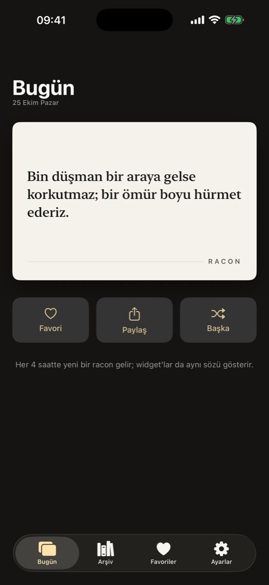
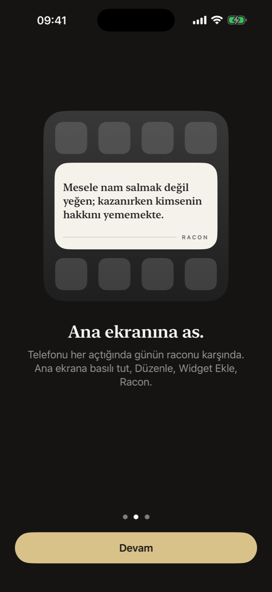
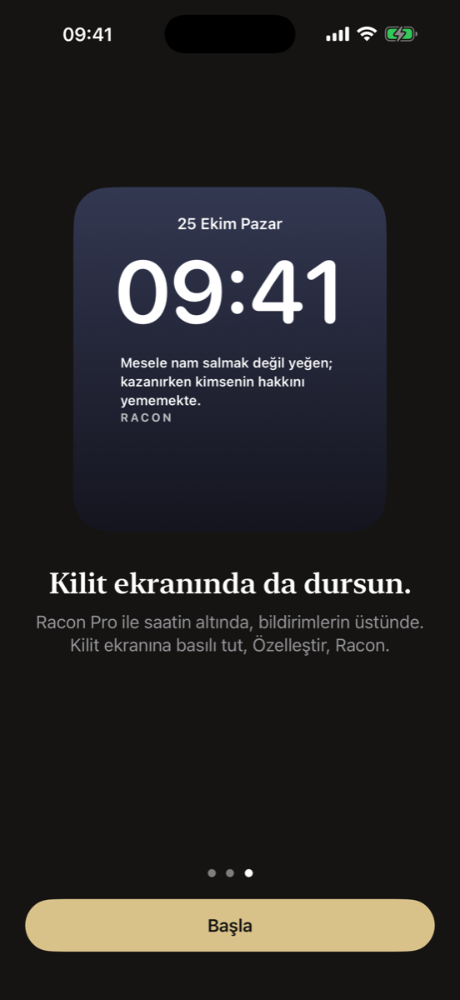

Günün raconu, kilit ekranında.
Ağır abiden, delikanlıdan, sokağın ve kahvehanenin raconundan sözler. Kartvizit gibi bir kartın üstünde; ana ekranında ve kilit ekranında.
App Store'da İndiriPhone için, TürkiyeGeri vites yok dedik de yanlış sokağa girdiysek döneriz.
RACON



Ücretsiz
- Her gün yeni bir söz
- İlk kullanımda 3 değişim; ardından günde 1 değişim. Yeni söz getiren açılışlar aynı haklardan kullanır.
- Ana ekran ve kilit ekranı widget'ları
- Favoriler ve bütün kart renkleri
- Sözü kart olarak paylaşma
Racon Pro
- Her ay yenilenen söz arşivi, arama ve kategoriler
- Sınırsız kaydırma, widget'tan anında değiştir
- 1, 2, 4, 6, 12 veya 24 saatte otomatik değişim
- Favorilerin arasında döngü veya sabit favori
- Aylık veya yıllık abonelik